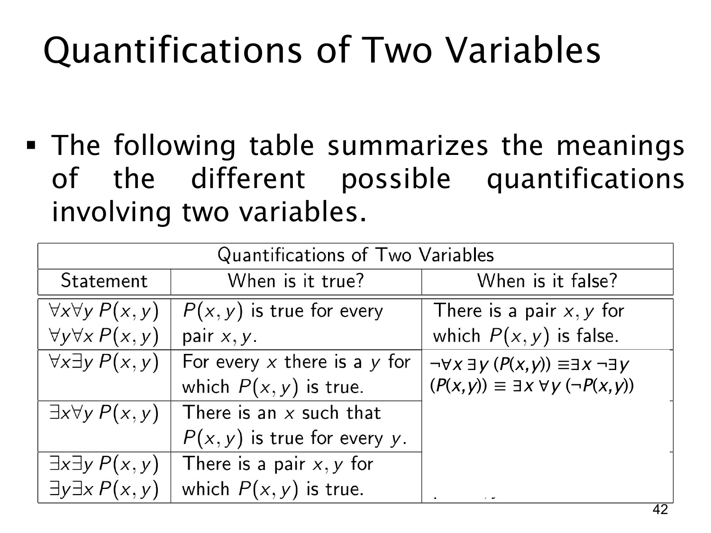

L1.2 · 第 42 页讲解原文
查看这一页课件

两变量量词表：如何否定“每个 x 都有合适的 y”
本页延续上一页的两变量量词表，重点把“何时为假”推进到第二行。第一行 ∀x∀yP(x,y) 要求每一对对象都满足 P；它为假只需一对反例 (x,y)。第二行则是
∀x∃yP(x,y),
意思是“每一个 x 都有至少一个使 P(x,y) 成立的 y”。对于不同的 x，可选不同的 y。
若要使第二行为假，不能只展示某个 x 与某个 y 配起来失败，因为同一个 x 也许还能找到别的 y。必须找到一个特定的 x，使所有可选的 y 都失败。用公式逐层否定即
¬∀x∃yP(x,y)≡∃x¬∃yP(x,y)≡∃x∀y¬P(x,y).
例如令 P(x,y) 为“xy=1”，论域取实数。原句“每个 x 都有一个乘法逆元”是假；选 x=0 后，任何实数 y 都有 0y=1。0 是外层存在量词的见证，而内层必须覆盖所有 y，这正好符合上式。
表中也再次并列显示 ∃x∀yP(x,y) 与 ∃x∃yP(x,y) 的日常含义；真正需要分清的是反例的强度：推翻“每对都对”只需一对错，推翻“每个 x 有一对”则需一个 x 对所有 y 都错。